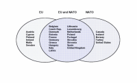

This lesson deals with the complex relationship between the European Union (EU) and NATO. It discusses initiatives within NATO to create a European Security and Defence Identity (ESDI), and cooperation between the EU and NATO under the Berlin Plus arrangements. It also presents various views about the ways in which the creation of the European Security and Defence Policy (ESDP) might affect NATO and the transatlantic link.
In this lesson, you will learn about the declarations and arrangements that have been adopted to regulate the relationship between the EU and NATO. In the lesson you will also learn about the modes of cooperation between the two institutions during a particular EU-led peace support operation. Finally, you will learn about the ongoing debate about whether the development of ESDP will have a positive or a negative impact on NATO.
During the development of the European Security and Defence Policy (ESDP), one major challenge has been to determine the relationship and the level of cooperation between the European Union (EU) and the North Atlantic Treaty Organisation (NATO). This has been a difficult task, because some have feared that the creation of ESDP would weaken NATO. There has also been some disagreement among EU countries about the necessary level of cooperation between the two institutions. Moreover, it can be argued that EU-NATO relations are also representative of the relationship between the US and Europe, that is, of the transatlantic link. So far, it is unclear how the creation of ESDP will affect the relationship between the EU and NATO, partly because both organizations are still evolving, and partly because the security environment is still as fluid as it has been at any time since the end of World War II.

This lesson begins with a few remarks on NATO initiatives to create a European military capacity and to enhance the military capabilities of European NATO members. We then turn to the EU-NATO Declaration on ESDP and cooperation between the EU and NATO under the Berlin Plus arrangements. Finally, we look at the impact that the development of ESDP might have on NATO and the transatlantic link.
Efforts to establish a genuine European military capacity and to improve the military capabilities of European countries have taken place both outside and within the NATO framework. Thus, in the 1990s, NATO's European Security and Defence Identity (ESDI) was launched. The objective of this initiative was to give European countries a greater say within NATO and more responsibility in providing their own security within the NATO framework. In addition, at its Washington summit in 1999, NATO launched the Defence Capabilities Initiative (DCI), which was designed to improve and transform European military capabilities. However, given the continuing uncertainty about the type of militaries Europeans required in the new security environment, and given the limited funds available, NATO scaled back its ambitions at the November 2002 Prague Summit, where a more modest version of the DCI, the Prague Capabilities Commitments (PCC), was agreed upon. At the same summit, NATO also decided to create the NATO Response Force (NRF), which should be fully operational by 2006. This initiative will also have an impact on the transformation of European military capabilities.
- The understanding that the crisis management of the two organizations shall be mutually reinforcing, while it is recognised that the nature of the EU and NATO are different
- Effective mutual consultation, dialogue, cooperation, and transparency
- Equality and due regard for the decision making autonomy and interests of the EU and NATO
- Respect for the interests of the members states of the EU and of NATO
- Respect for the principles of the United Nations Charter
- Coherent, transparent, and mutually reinforcing development of the military capability requirements common to the two organizations
- Assured EU access to NATO operational planning
- Presumption of availability to the EU of NATO capabilities and common assets
- Availability of NATO European command options for EU-led crisis management operations, including the position of NATO's Deputy Supreme Allied Commander, Europe (DSACEUR)
- Adaptation of the NATO defence planning system to facilitate the availability of forces for EU operations
The coordination mechanisms between NATO and the EU are backed by meetings between various bodies of the two organizations. The most important meetings involve the North Atlantic Council (NAC), NATO's principal decision-making body, and the EU's Political and Security Committee (PSC), the EU's coordinating body for ESDP-related issues. NATO's secretary-general and the High Representative for the CFSP of the EU attend these meetings, at which a range of security concerns are discussed, information is exchanged, and joint efforts are planned.
Before continuing, please answer the following questions.
The first time the Berlin Plus arrangements were applied in practice was in Operation Concordia, which the EU launched in the Former Yugoslav Republic of Macedonia (FYROM) on 1 April 2003. The operation was characterised by close coordination between EU and NATO decision making structures, and the EU made use of NATO's assets.
Please look at the following two websites and examine NATO's role in Operation Concordia. Then answer the question below.
 Consult the EU's website on Operation Concordia
Consult the EU's website on Operation Concordia
 Also consult NATO's website on Operation
Concordia
Also consult NATO's website on Operation
Concordia
The creation of ESDP, as mentioned before, has given rise to intense debate on both sides of the Atlantic about how ESDP will affect NATO and, in particular, about whether or not ESDP will weaken NATO. Proponents of ESDP have argued that ESDP will not weaken but complement or even strengthen NATO. They point to the need for the EU to possess an autonomous capacity to launch EU-led military operations in cases where NATO as a whole might not be willing or able to act. According to this group, the relationship between the EU and NATO is not one of competition and duplication but of complementarity. For example, while ESDP will enable the EU to take independent action in low and medium intensity conflicts, ESDP will not compromise NATO's capacity to undertake missions at the high end of the conflict spectrum.
However, ESDP has also had its critics since its beginning. Critics point to the potentially deleterious impact ESDP might have on NATO and the transatlantic link. The main arguments were propounded by former US secretary of state Madeleine Albright in an article in the Financial Times newspaper immediately after the December 1998 British-French summit in St Malo. To a large extent, Albright's argument is still relevant. Please read her article, and then answer the question.

Former NATO secretary-general Lord George Robertson, by contrast, formulated Albright's concerns in a positive way. In a December 1999 speech, he put forward three I's: "improvements in European defence capabilities; inclusiveness of all the non-EU NATO Allies in our common efforts, and the indivisibility of the transatlantic link."
The relationship between NATO and the EU is still developing, and the division of labour and forms of cooperation between the two institutions are still being decided upon on an ad hoc basis. Further, the general question of how the creation ESDP will affect NATO and the transatlantic relationship in the long-term remains unsettled. Nevertheless, with the EU-NATO Declaration and the Berlin Plus arrangements, the EU and NATO have taken significant steps towards improving and formalizing collaboration and coordination between the two organizations. Moreover, Operation Concordia has shown that the Berlin Plus arrangements are of practical relevance, and the EU and NATO can find workable solutions to whatever role NATO will have in EU-led crisis management operations.
You have completed this learning object.
You have completed this learning object.
Please click on the button to close this window.